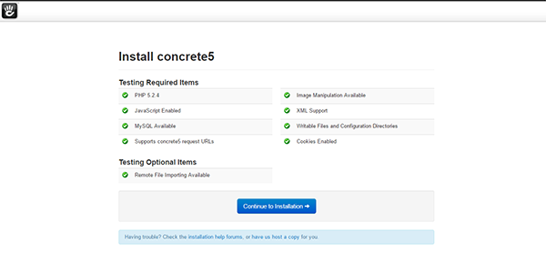

Install and configure Concrete5 on your LAMP server - Arch Linux, PHP, Applications
Install and configure Concrete5 on your LAMP server - Arch Linux
Difficulty: 1
Time: 20 minutes
Introduction
Concrete5 is an open-source content management system (CMS) made in PHP. Concrete5 is easy to understand and learn. In this article you will learn, how to install and configure Concrete5 on your Arch Linux LAMP server.
Before you proceed, you must have access to sudo privileges to perform the steps mentioned in this article. In addition, you will need to build a LAMP stack.
Install the required dependency
- Install the unzip tool, which is required to extract the file.
sudo pacman -S unzip
- Install the PHP libraries for graphics.
sudo pacman -S php-gd
Update the PHP configuration file
- Open
php.ini to enable various graphics and modules.
sudo vim /etc/php/php.ini
- Uncomment the following lines in the file.
extension=mysql.so
extension=mysqli.so
extension=iconv.so
extension=gd.so
- Save and close.
- Restart the Apache services to make the changes effective.
sudo systemctl restart httpd.service
Basic configuration
- Download the the source of concrete5 from the official site, using the following command:
cd /srv/http
sudo wget --trust-server-names http://www.concrete5.org/download_file/-/view/58379/8497/ -O concrete5.zip
- Extract the downloaded source.
sudo unzip concrete5.zip
- Rename the file
concrete5.6.2.1 as concrete5 to shorten the name.
sudo mv concrete5.6.2.1 concrete5
- Change directory to
concrete5.
cd concrete5
Create database
- Access MySQL.
mysql -u root -p
- Create a blank database for backend operation.
CREATE DATABASE concrete5;
- Exit MySQL.
exit
Grant Permissions
- Change ownership of the following items to make them writable for concrete5.
sudo chown -R http:http /srv/httpconcrete5
- Change permissions of the following folders.
sudo chmod -R 755 /srv/httpconcrete5
Install Concrete5
- In your web browser, type in the public IP or URL of your concrete5 server http://server_ip/concrete5, and then press the Enter key.
- On the installation page, click Continue to Installation.

- Enter the required information for Site, Database, and Administrator, and then click Install concrete5.

- After the installation process is complete, click Continue to your site.You will be redirected to the Welcome screen of concrete5.

- Select any of the guides to get started.
Next Steps
In this article, you have learned to install and configure concrete5 on your Arch Linux LAMP server.